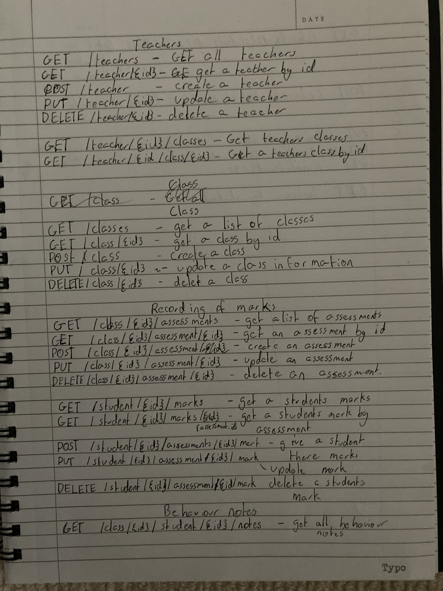
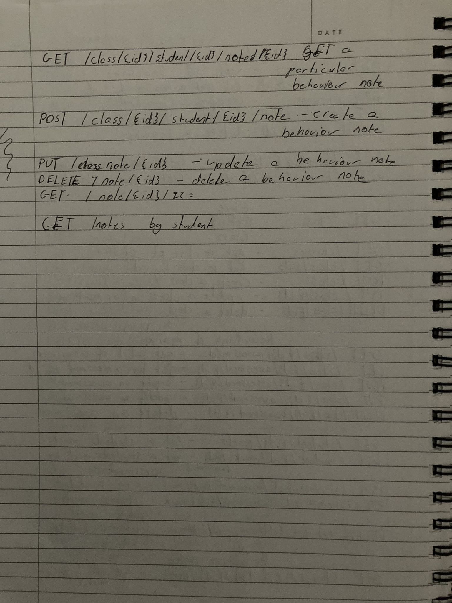
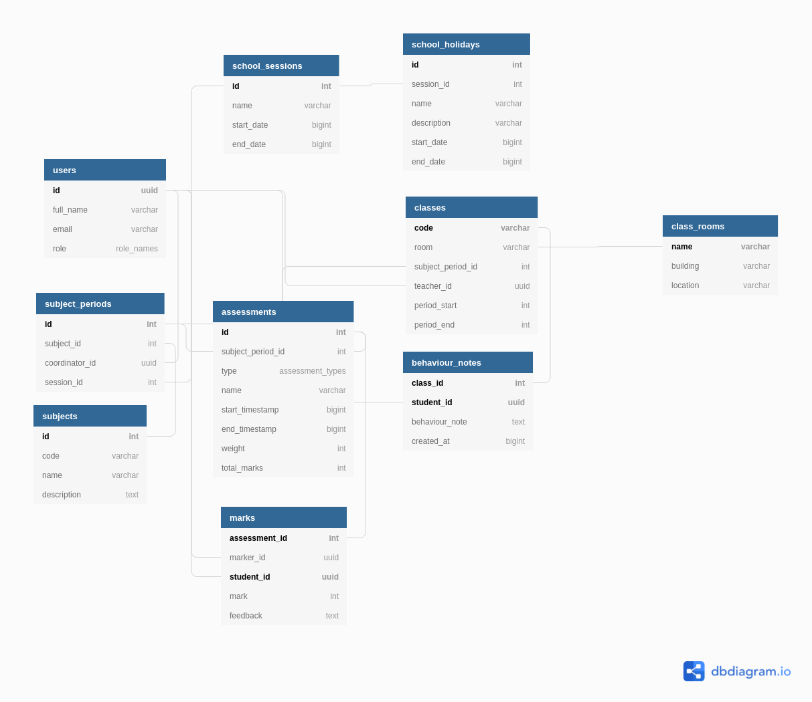

Lockdown Code Part 1: Planning a classroom manager
In highschool I had a assignment that nearly killed me. This assignment was called the classroom manager. I never finished it and now with all the time that lockdown has awarded us, I feel like it is finally time to revisit it. In my first lockdown session I will entirely focus on my own personal process of planning for development and writing documentation.
Intro to the classroom manager
The problem with the classroom manager is it is deceptively simple, but having tried it and not having finished it, I know it is actually quite a task. The actual assignment had a few requirements that I will go through first before I attempt to tackle the actual planning.
-
Has to store persistant data (preferably with a database).
-
Has to contain a graphical element (no cli applications).
-
Has to contain testing (unit testing, and integration testing if deployed).
-
Has to be documented and planned.
-
Has to contain a single addition feature.
-
The code has to be clean (very small main function, split into different packages).
I think for me the real killer was the requirement to have persistant data storage and a graphical element. At the time the reason I didn't finish was the requirement to have an additional feature. It mean't that you would over compensate and try and plan all these amazing things, only a small fraction of which was actually reasonably doable. The actual spec is already hard enough to implement with no additional features.
Let's go through the spec now, it will make most people chuckle, but on further thought it will make people cry.
-
Have class lists
-
Recording of marks
-
Recording of timetables
-
Behaviour notes
That is all there is, your imagination is your enemy and friend. As such there was no requirement for the application to be CRUD. While the spec only requires that timetables and marks be CRUD, and everything else can be read only, I thought it would be a good idea to have the entire application be crud on the api atleast.
My previous interpretation from highschool
I will admit in highschool I bit off far more then I could chew. I knew from the start the classroom manager was a tool for teachers, but my extra features were that it could also be for students and that I would have some authentication and authorization flow. Having been my first ever introduction to auth flows I thought it would be a good idea to implement it all by myself. I interpreted class lists as a crud operation where admins could create and delete, view and update classes. Classes had students, and teachers. Teachers could view all classes and there own. Students could only view the classes that they were assigned to. I had viewed recording of marks as having assessments and tracking them, with different assessment types, and different assessments had marks allocated to each student. Which was a reasonable interpretation. Recording of timetables was a big gotcha, I had interpreted as recording of a roll, and marking each student as present, absent or not. I had also interpreted it as having teachers have a set schedule that they could view there classes and times. This is not reasonable for many reasons and it is super hard to implement depending on how you represent your data. Our last requirement behaviour notes is super easy, you record the behaviour of each student in a class. For this no timestamp is required and you could interpret it as just a single behaviour note per class. I decided which I still standby, just to have a behaviour note for a student and a class.
Some considerations I did not make
Having the classroom manager extend to students was the dumbest idea ever, it increased the workload exponentially. Writing your own auth implementation was even more so dumb, 90% of the time I spent on the classroom manager was figuring out how to implement the proper auth flow.
A massive pitfall was also I never considered much what the end result would look like, back then I had done some web development with python django, and in retro spect I should have just used python django. Having wanted to try something different I wanted to go a different route, first thinking of spring boot and java, but I had no clue what a rest api was. Now having had experience I now know what the application 'could' look like in production from just pure imagination.
I think probably my biggest downfall in lack of foresight which came from lack of experience was dealing with internationalization. I never thought about how I would deal with dates and times. When initally planning the database for the project I had done something stupid by making the tables be naive timestamps. I had no plan for converting to a format that would show consistant times no matter where you are in the world. A massive pitfall of this approach wasn't just internationalization which I didn't know about, but how to deal with things like timetables where teachers would have subjects in regular intervals of time. Trying to figure this out was one of the reasons my timetable never worked.
A more sane interpretation
A more sane interpretation is still pretty similar. I made the application be for teachers use only, easily improved upon in the future if students need access to the application. I kept the requirement for authentication because by itself that is reasonable, but this time outsourcing it to a 3rd party provider (auth0). For class lists to me that means you have crud operations for managing a teachers class. Admin roles can create and delete classes. Teachers can update their own classes, and view all classes. Kept recording of marks exactly the same. For timetables I do nothing, I interpret it as part of the crud operation for classes, and just the ability to view a class timetable for a teacher. The ability to update a class for a teacher gives them the ability to 'manage their timetable'. For behaviour notes I also kept the interpretation the same.
Bottom up design and the agile approach
Having defined and fleshed out the end users requirements, we now start thinking about agile approaches to development. This looks like
technical requirements -> development -> testing -> deploy -> repeat
We can use devops to automate a lot of this process including creating technical requirements.
Our first step in creating our application is thinking about how we want to plan our application. Applying this second derivative thinking where you think about how you change your application over time. It allows us to stay ahead of the curve so later on we won't have to rewrite our model for developing features and things.
What this looks like is planning ahead what our tool stack looks like, thinking about things that shouldn't change in the future, thinking about what we cannot change and what we can change.
Planning the toolstack
Often this includes experience and design considerations. First of all I think about what offers me the ease of use to accomplish my goal, compared to giving me the greatest flexibility to improve upon in the future. Think back to companies choosing a bad framework or library, writing code that isn't maintainable and the cost of having to rewrite from scratch.
My first consideration was documentation. When I first wrote the classroom manager I used microsoft word (lol). I won't go into why this sucks. Having learn't my lesson I will use plain images and https://dbdiagram.io for my database schemas. I also will use the react component for redoc to document the api. For the front end nothing beats plain old pen and paper (I won't even though because I have an ipad and apple pencil).
Writing authorization is pretty simple, just use auth0 and their libraries.
Back when I first wrote the class manager I used golang and graphql. GraphQL was a good choice but now I choose to ditch it because while it will give me more flexibility in the future, my experience and ease of writing rest apis outweighs the cost. GraphQL was also made to be easily added to legacy rest api's so it is still an option for the future. Golang has to go, it sucks, I decided to build my application using F# and Giraffe, a functional wrapper around the native dotnet aspnet web libraries.
The frontend was a simple choice, typescript, react, redux, react-router, and functional reactive programming. Why? because that is what I used when I first planned the site originally. Of course I transitioned to graphql so redux became apollo, but in the end it is pretty much the same thing. When I wrote the application I was a different man though. I tried object oriented and plain javascript but it caused so much headaches, so I ended up using typescript and react-hooks which was beta at the time. Now I would go for a much more elm like approach to front end software development. I also forgot to mention I will use bootstrap, I originally used material react, which I thought looked super ugly. bootstrap also looks ugly but it is just a boiler plate for responsiveness, extending bootstrap is the goal compared to material design themes where what you get is what you're stuck with.
Planning how we write our documentation is important because as we figure out problems and pitfalls, redefining the requirements will become essential. This is the second derivative thinking we were talking about before (thinking about how our application will change over time).
Bottom up - Starting with the pen and paper
Our first goal is to create a database, then the server side and then finally the client side in a bottom up approach. Defining what the database looks like makes it so easy to figure out what the api and the front end will look like.
On the other hand to develop the database, we need to figure out what it needs to accomplish, so we start on an even lower level then the database, where we start by planning on pen and paper.
For me this typically looks like writing down what we need to accomplish or the 4 points of the application. Figuring out possible routes and data models and maybe a few sketches of the client.
For the classroom manager I didn't even bother with the data models, I just went straight to the routes, I had already done the project before and new roughly what the data models would look like, but not having done a rest api, needed to think about routes. Pen and paper is just a rough sketch of ideas, it is not a concrete part of the agile process. It is kind of like a hidden secret to great planning. Something to get your ideas down quickly as they come before they disappear.



A quick thing to note is how to write technical requirements. Technical requirements for me personally are not a broad set of things that your application may do. They aren't written in words. Technical requirements are the api docs (redoc, swagger) or the database ER diagram. Technical requirements are handrawn or wireframe mockups of what the application will look like in production. In the original application one task we had to do was to create documentation for our application, after a few years, I disagree with the documentation I wrote, I shouldn't have pseudo code in the documentation and the requirements should have been a more concrete thing like endpoints we had to implement and a database ER diagram we had to make.
Bottom up - Planning the database
This is relatively simple, in university they made it so complicated and hard but all you have to do is log onto dbdiagram.io, and enter a bit of code where you loosely define relationships for your entities. You could also do a more graphical approach with other software if you prefer but this is definately my most preferred method of database planning.
Table users as U {
id uuid [pk, increment] // auto-increment
full_name varchar [not null]
email varchar [unique, not null]
role role_names [not null]
}
Enum role_names {
admin
teacher
student
}
Table school_sessions as SS {
id int [pk, increment, unique, not null]
name varchar [not null]
start_date bigint [unique, not null]
end_date bigint [unique, not null]
}
Table school_holidays as SH {
id int [pk, increment, unique, not null]
session_id int [not null, ref: > SS.id]
name varchar [not null]
description varchar [not null]
start_date bigint [not null]
end_date bigint [not null]
}
Table subjects as S {
id int [pk, increment, unique, not null]
code varchar [unique, not null]
name varchar [unique, not null]
description text [not null]
}
Table subject_periods as SP {
id int [pk, increment, unique, not null]
subject_id int [not null, ref: > S.id]
coordinator_id uuid [not null, ref: > U.id]
session_id int [not null, ref: > SS.id]
}
Table class_rooms as CR {
name varchar [pk, unique, not null]
building varchar [not null, default: "Main Campus"]
location varchar [unique, not null]
}
Table classes as C {
code varchar [pk, unique, not null]
room varchar [not null, ref: > CR.name]
subject_period_id int [not null, ref: > SP.id]
teacher_id uuid [not null, ref: > U.id]
period_start int [not null]
period_end int [not null]
}
Table assessments as A {
id int [pk, increment, unique, not null]
subject_period_id int [not null, ref: > SP.id]
type assessment_types [not null]
name varchar [not null]
start_timestamp bigint [not null]
end_timestamp bigint [not null]
weight int [not null]
total_marks int [not null]
}
Enum assessment_types {
assignment
quiz
exam
}
Table marks as M {
assessment_id int [not null, ref: > A.id]
marker_id uuid [not null, ref: > U.id]
student_id uuid [not null, ref: > U.id]
mark int [not null]
feedback text [not null]
Indexes {
(assessment_id, student_id) [pk]
}
}
Table behaviour_notes as BN {
class_id int [not null, ref: > C.code]
student_id uuid [not null, ref: > U.id]
behaviour_note text [not null]
created_at bigint [not null]
Indexes {
(class_id, student_id) [pk]
}
}
Ref: "assessments"."id" < "assessments"."subject_period_id"
The output would look something like this:

I usually put this in a ./docs/db subdirectory of my project.
That's it for lockdown coding part 1. Thanks.